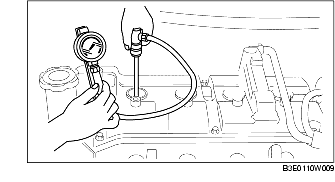

KONTROLL AV MOTORKOMPRESSIONEN [ZJ, Z6]
B3E011001001W01
-
Varni ng
-
• Varma motorer kan orsaka allvarliga brännskador. Var försiktig vid demontering/montering av komponenter så att du inte bränner dig.
-
• Bränsleånga är mycket farligt. Den är mycket lättantändlig och kan orsaka svåra skador och olyckor. Håll alltid gnistor och öppna lågor borta från bränslet.
-
• Bränsleläckage och bränslespill är mycket farligt. Bränslet kan antändas och orsaka svåra skador och olyckor eller till och med dödsfall. Bränsle kan dessutom irritera hud och ögon. För att förhindra detta, följ alltid anvisningarna under 'Säkerhetsföreskrifter för bränslesystemet' när du utför service på bränslesystemet, och demontera bränslepumpsrelät. (Se FÖRSIKTIGHETSÅTGÄRDER FÖRE SERVICE [ZJ, Z6, LF].)
1. Kontrollera att batteriet är fulladdat. (Se KONTROLL AV BATTERIET.)
2. Varmkör motorn till normal arbetstemperatur.
3. Stanna motorn och låt avgassystemet svalna i cirka 10 minuter.
4. Demontera bränslepumpreläet. (Se FÖRSIKTIGHETSÅTGÄRDER FÖRE SERVICE [ZJ, Z6, LF].)
5. Demontera luftrenaren. (Europeiska specifikationer (vänsterstyrning)) (Se DEMONTERING/INSTALLATION AV INSUGSLUFTSYSTEM [ZJ, Z6].)
6. Ta bort kåpan över luftrenaren och placera luftrenarhuset ut vägen med PCM-kontakten fortfarande inkopplad. (GB specifikationer) (Se DEMONTERING/INSTALLATION AV INSUGSLUFTSYSTEM [ZJ, Z6].)
7. Demontera tändspolarna. (Se DEMONTERING/MONTERING AV TÄNDSPOLE [ZJ, Z6].)
8. Demontera alla tändstift. (Se DEMONTERING/MONTERING AV TÄNDSTIFT [ZJ, Z6].)
9. Mät kompressionstrycket enligt följande.
-
(1) Anslut kompressionsmätaren till tändstiftshålet.

-
(2) Öppna gasspjället helt.
-
(3) Dra runt motorn och mät kompressionstrycket.
-
Kompressionstryck
-
ZJ
-
• Standard
-
1461 kPa {14,90 kp/cm2, 211,9 psi} [300 varv/min]
-
• Minimum
-
1023 kPa {10,44 kp/cm2, 148,4 psi} [300 varv/min]
-
• Största tillåtna skillnad mellan cylindrarna
-
196,1 kPa {2,0 kp/cm2, 28,5 psi}
-
Z6
-
• Standard
-
1470 kPa {14,99 kp/cm2, 213,2 psi} [250 varv/min]
-
• Minimum
-
1029 kPa {10,49 kp/cm2, 149,2 psi} [250 varv/min]
-
• Största tillåtna skillnad mellan cylindrarna
-
196,1 kPa {2,0 kp/cm2, 28,5 psi}
-
(4) Utför steg (1) till (3) för alla cylindrar.
-
(5) Om det är lägre än det minsta värdet, eller om det finns en cylinder vars kompressionsvärde avviker från de andra cylindrarna med 196,1 kPa {2,0 kp/cm2, 28,5 psi} eller mer , droppa i lite motorolja i tändstiftshålet.
-
• Om trycket ökar när du droppar i motoroljan, är kolvringen eller cylinderns yta sliten eller skadad. Renovera.
-
• Om trycket inte ökar, kan orsaken vara att ventilen kärvar, att ventilsätet är skadat eller att tryck läcker ut från topplockspackningen. Renovera.
10. Sätt tillbaka tändstiften. (Se DEMONTERING/MONTERING AV TÄNDSTIFT [ZJ, Z6].)
11. Sätt tillbaka tändspolen. (Se DEMONTERING/MONTERING AV TÄNDSPOLE [ZJ, Z6].)
12. Montera luftrenarkomponenten. (Se DEMONTERING/INSTALLATION AV INSUGSLUFTSYSTEM [ZJ, Z6].)
13. Sätt tillbaka bränslepumpreläet. (Se FÖRSIKTIGHETSÅTGÄRDER FÖRE SERVICE [ZJ, Z6, LF].)